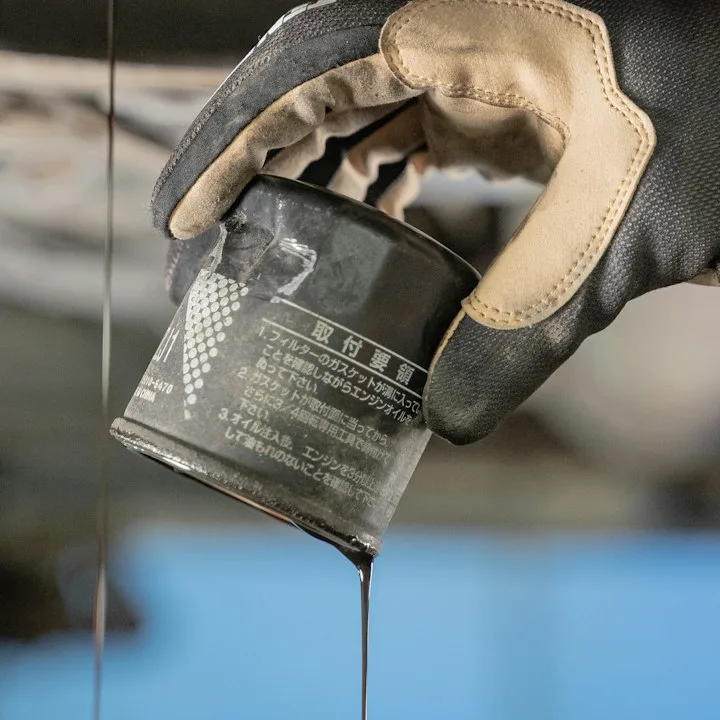
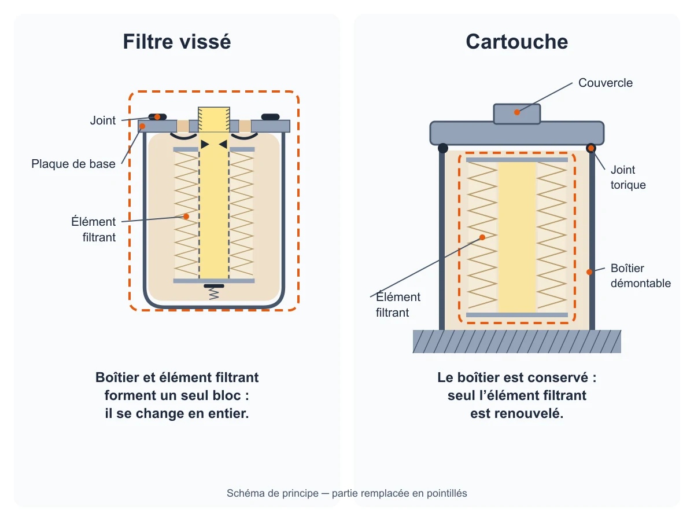
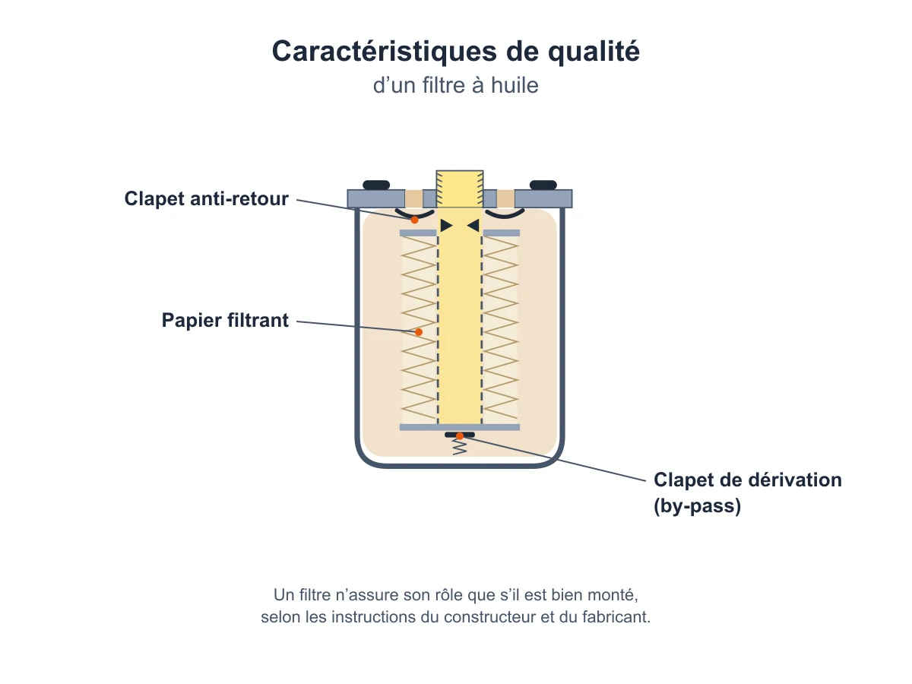

H1 (champ protégé)conservénon modifiéFiltre à huile compatible avec votre véhicule
r1s_hero_subtitleaméliorécatalogueSélectionnez votre véhicule : seuls les filtres à huile rattachés à sa motorisation s'affichent, vissés ou cartouches.
r1s_selector_microcopyaméliorécatalogueDeux versions d'un même modèle ne reçoivent pas toujours le même filtre.
Sélecteur de véhicule (composant, non simulé)
r1s_arg1_title / _contentaméliorécataloguer1s_arg2_title / _contentamélioréadmisr1s_arg3_title / _contentaméliorécataloguer1s_arg4_title / _contentamélioréeditorialR1 HERO · rip 31remplacer
codé · non modifié Navigation rapide et encart diagnostic (composants ; compteur servi en FH-5).
H2codéBien choisir votre filtre à huile
h3codéTypes de filtre à huile
R1 TYPES · rip 32remplacer
sg_content → chooseSectionamélioréFiltre vissé ou cartouche : la différence
Le filtre à huile existe sous deux formes, et c'est le moteur qui impose la sienne. Le filtre vissé réunit le boîtier et l'élément filtrant en un seul bloc : il se change en entier. La cartouche se loge dans un boîtier démontable : seul l'élément filtrant est remplacé, le boîtier est conservé.
sg_content → chooseSectionamélioréCritères qui distinguent deux filtres semblables
Deux filtres de même taille et de même aspect peuvent être très différents à l'intérieur. Selon le moteur, un filtre vissé comporte ou non un clapet anti-retour, qui garde l'huile dans le filtre quand le moteur est arrêté. Son clapet de dérivation (by-pass) s'ouvre à une pression qui varie d'un moteur à l'autre. Le filetage de raccordement, le média filtrant, la finesse de filtration et la surpression admissible changent aussi.
Ces écarts ne se voient pas de l'extérieur. Le catalogue part donc de la motorisation, jamais de l'apparence de l'ancien filtre.
Liste de contrôle et erreurs fréquentes du composant : non simulées.
H2codé · FH-15Qualité, prix et marques
h3codé · FH-15 : la page n'a pas de niveaux de prixNiveaux de qualité
R1 PRICE · rip 33remplacer (remplacement neutre)
sg_content → priceSectionamélioréQualité d'un filtre à huile : ce qui compte
Le papier filtrant, le clapet de dérivation et le clapet anti-retour font partie des caractéristiques de qualité d'un filtre à huile. Plus l'intervalle de remplacement prévu par le constructeur est long, plus cette qualité compte.
Le montage compte aussi : même un bon filtre ne fonctionne correctement que s'il a été bien monté, en suivant les instructions du constructeur du véhicule et du fabricant du filtre.
Les marques présentées ci-dessous viennent du catalogue. Quelle que soit la marque, la référence doit d'abord être celle prévue pour votre motorisation.
r1s_equipementiers_lineaméliorécatalogueLes marques présentées viennent du catalogue, où chaque référence est rattachée à des motorisations précises. La marque ne remplace pas la vérification de compatibilité.
Logos et fiches équipementiers : composant et catalogue, non simulés.
H2codéOù se trouve le filtre à huile et quand le remplacer
R1 LOCATION · rip 34désélectionnéesg_content → locationSectionamélioréRôle du filtre à huile et moment du remplacement
Le filtre à huile empêche les impuretés d'entrer dans le circuit de lubrification du moteur. Il aide ainsi à préserver la qualité de l'huile, les performances et le rendement du moteur.
Son emplacement dépend du moteur : cette page n'en indique pas un valable pour tous. Sur certains moteurs, le filtre est monté à l'horizontale ou tête en bas ; un clapet anti-retour y empêche l'huile de quitter le filtre à l'arrêt.
Il se remplace aux échéances d'entretien fixées par le constructeur du véhicule. Aucune durée ni aucun kilométrage ne vaut pour tous les véhicules. Un filtre gardé trop longtemps peut se colmater : son clapet de dérivation s'ouvre alors pour continuer d'alimenter le moteur, avec une huile qui n'est plus filtrée.
Les étapes du remplacement sont détaillées dans le guide du filtre à huile.
H2codéTrouver la bonne référence pour votre véhicule
sg_content → referenceSectionamélioréTrouver la référence de votre véhicule
Un même modèle peut recevoir des filtres différents selon sa motorisation. Pour afficher ceux qui conviennent :
- Renseignez la marque, le modèle, l'année et la motorisation exacte, puissance comprise.
- Sur la page de votre motorisation, comparez les références proposées avec la référence d'origine quand elle est indiquée.
- Vérifiez la forme : un filtre vissé remplace un filtre vissé, une cartouche remplace l'élément filtrant d'un boîtier. Pour une cartouche, la fiche précise parfois si le joint torique est fourni.
Pour chercher l'origine d'un défaut, commencez par le diagnostic.
r1s_compatibilities_introaméliorécatalogueChaque page de motorisation liste les filtres à huile rattachés à cette version précise. Vérifiez la motorisation exacte, puissance comprise, avant de choisir.
Liste des motorisations : catalogue, non simulée.
r1s_safe_table_rowsamélioréadmis + catalogue| Élément | Comment vérifier |
|---|---|
| Identifiant | Marque, modèle, année et motorisation exacte du véhicule, puissance comprise. |
| Référence / équivalence | Comparez la référence d'origine indiquée sur la page de votre véhicule avec celles proposées pour sa motorisation. |
| Connectique | Filtre vissé : même filetage de raccordement. Cartouche : même boîtier, seul l'élément filtrant change. |
| Dimensions | Hauteur et diamètre extérieur quand la fiche les indique ; une dimension proche ne suffit pas. |
Ligne de repli si FH-12 n'établit pas l'affichage des dimensions : « Ne pas confondre avec ».
Questions fréquentes
r1s_faqamélioréadmis + catalogueComment trouver le filtre à huile compatible avec ma voiture ?
Renseignez la marque, le modèle, l'année et la motorisation dans le sélecteur : seules les références rattachées à cette motorisation s'affichent. Ne partez pas de l'apparence de l'ancien filtre, car des filtres semblables peuvent différer à l'intérieur selon le moteur.
Filtre vissé ou cartouche, lequel choisir ?
Celui que prévoit votre moteur : la forme ne se choisit pas. Un filtre vissé se remplace en bloc. Une cartouche est l'élément filtrant d'un boîtier démontable, et le boîtier est conservé.
Deux versions du même modèle ont-elles le même filtre ?
Pas toujours, car le filtre dépend du moteur. Vérifiez la motorisation exacte, puissance et année comprises, avant de choisir.
Une autre marque que celle d'origine convient-elle ?
Les références affichées pour votre motorisation lui sont rattachées dans notre catalogue, quelle que soit leur marque. En cas de doute, comparez-les avec la référence d'origine indiquée sur la page de votre véhicule.
Quand faut-il remplacer le filtre à huile ?
Aux échéances d'entretien fixées par le constructeur de votre véhicule ; aucun kilométrage ne vaut pour tous les véhicules. Le guide du filtre à huile détaille le remplacement.
H2codéAller plus loin
r1s_family_cross_sell_introamélioréadmisLes autres filtres du véhicule, à air, à carburant et d'habitacle, filtrent d'autres fluides et ont chacun leur propre référence.
Vignettes de la famille : catalogue ; deux vignettes servies en 400 (FH-14).
r1s_micro_seo_blockamélioréadmis + catalogue · 1850 caractères de textenon affiché au 30/10 (aucun consommateur frontend) ; présent dans les données de la page. Le passage en pointillés dépend de FH-12.
Le bon filtre à huile se choisit à partir du véhicule, jamais d'après l'apparence de l'ancien. Des filtres qui se ressemblent peuvent être très différents à l'intérieur selon le moteur : clapet anti-retour présent ou non, filetage de raccordement, pression d'ouverture du clapet de dérivation (by-pass), média filtrant, finesse de filtration, surpression admissible. Deux versions d'un même modèle ne reçoivent donc pas toujours la même référence.
Filtre vissé ou cartouche : la forme découle du moteur. Le filtre vissé réunit le boîtier et l'élément filtrant en un seul bloc ; la cartouche est l'élément filtrant d'un boîtier démontable, qui reste en place. Pour une cartouche, la fiche de la référence précise parfois si le joint torique est fourni. Le sélecteur ne retient que les références rattachées à la motorisation choisie : renseignez la marque, le modèle, l'année et la motorisation exacte.
Chaque page de motorisation liste les références qui lui sont rattachées, avec la référence d'origine quand elle est connue : comparez-la avec celles qui vous sont proposées. Quand la fiche publie les caractéristiques techniques, comparez aussi la forme, la hauteur, le diamètre extérieur, le filetage pour un filtre vissé et la pression d'ouverture du by-pass. Plus l'intervalle de remplacement prévu par le constructeur est long, plus la qualité du filtre compte : le papier filtrant, le clapet de dérivation et le clapet anti-retour en font partie. Même un bon filtre ne fonctionne correctement que s'il a été bien monté.
Ne confondez pas le filtre à huile avec le filtre à air, le filtre à carburant ou le filtre d'habitacle : ils filtrent d'autres fluides et ont chacun leur propre référence. Le guide du filtre à huile traite de son remplacement aux échéances du constructeur. Pour chercher l'origine d'un défaut, commencez par le diagnostic.